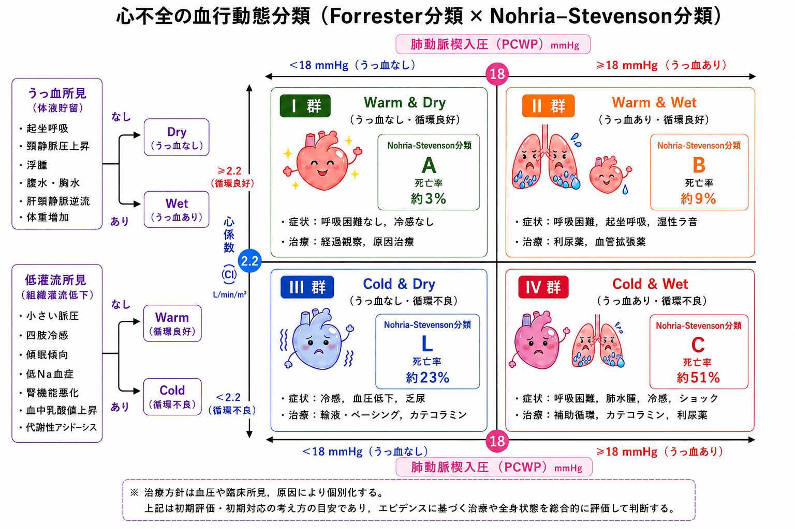
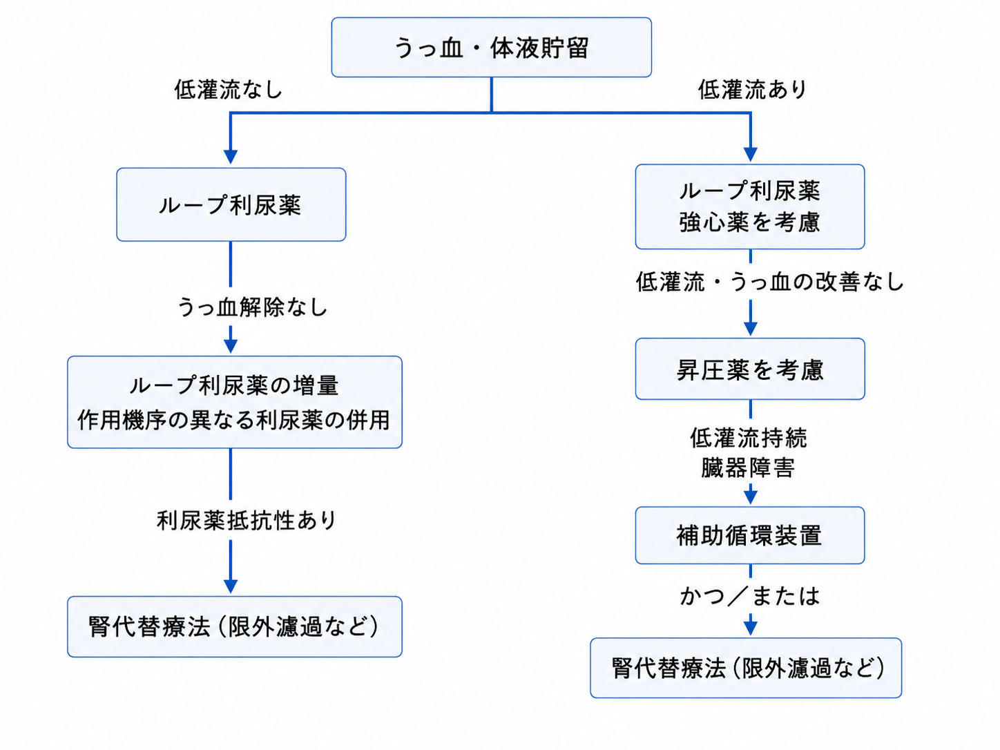
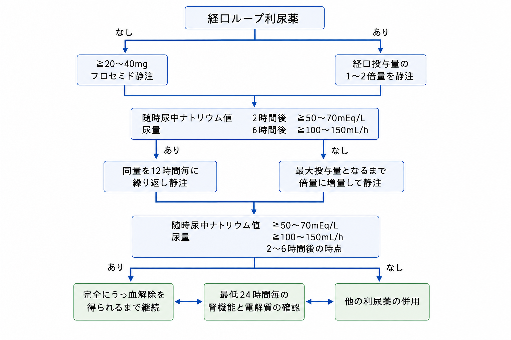

NPPV:CPAP，補助圧8cmH2O，FiO2 100%．
CO2貯留傾向ならS/Tモード
Fantastic4を積極的に導入．
内服薬は朝夕の2回に分けるのがスタンダード．
肺うっ血なし→βblocker
肺うっ血あり→ACEi
✔️強心薬
・ドブタミン:αβ受容体に作用．
2-3γの低用量から開始(1-10γで調整，0.3-0.5γずつ)．4γ程度まで．
0.2-1.0γずつ減量．
・ミノルリン(PDE-Ⅲi):強心血管拡張薬．肺高血圧やβblocker使用中に適している．血圧低下や腎機能低下では△
0.05-0.25γで開始，0.05-0.75γで持続投与．2-3時間毎に0.05-0.1γずつ調整．0.3γ程度まで．
0.05-0.1γずつ減量．
※腎やPLT↓に注意．
0.1-0.3γ(ドブタミン不十分での併用時)．
ドブタミン2γで改善なければミノルリン併用を考慮．
✔️血管拡張薬
・ニトロ(硝酸イソソルビド):0.5-3.3γで持続静注．超急性期はニトロ舌下スプレー2pushなど．
・カルペリチド(ANP製剤):0.0125-0.025γの低用量で使用．今後の研究を期待．
✔️利尿薬
利尿薬抵抗性がある場合は，サイアザイドやダイアモックスの併用も検討．
サムスカ7.5mg=サムタス静注8mg，サムスカ15mg=サムタス静注16mg．
高Na血症に要注意．
